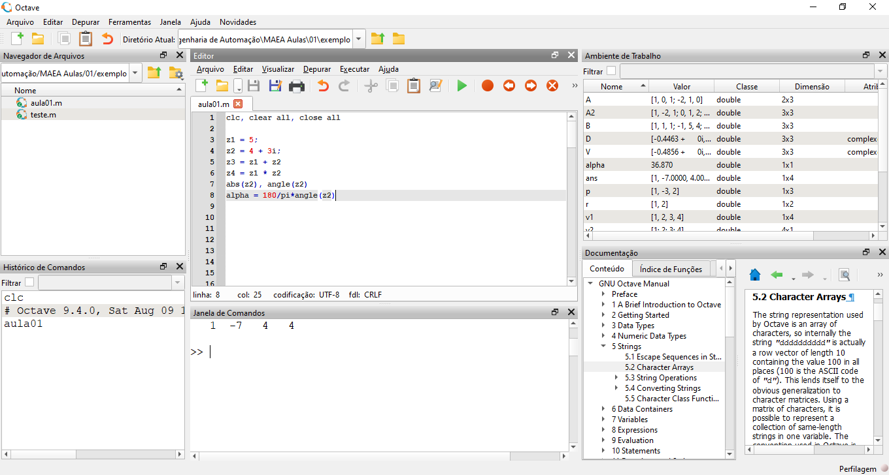

1. Componentes do Octave GUI
O GNU Octave GUI (Graphical User Interface) é a interface gráfica do GNU Octave, um software livre para cálculos numéricos compatível com a sintaxe do MATLAB. Essa interface fornece um ambiente visual amigável, reunindo em uma única janela:
- Navegador de Arquivos – facilita o acesso aos arquivos do projeto.
- Histórico de Comandos – registra tudo que foi executado.
-
Editor – para escrever, salvar e
executar programas
.m. - Janela de Comandos – para executar instruções interativamente.
- Ambiente de Trabalho (Workspace) – mostra os valores e tipos da variáveis criadas.
- Documentação – oferece documentos para orientação e exemplificação da linguagem.
O Octave GUI facilita o trabalho, pois permite alternar rapidamente entre edição, execução e análise de resultados, sem precisar memorizar todos os comandos ou gerenciar janelas separadas.

As janelas podem ser omitidas ou visualizadas a partir da barra de tarefas em Janelas >> Exibir Editor, por exemplo.
Além disso, o Octave GUI permite reorganizar as janelas livremente: basta clicar e arrastar o título da janela para uma nova posição. Elas podem ser encaixadas em diferentes regiões da interface, empilhadas como abas ou destacadas como janelas flutuantes. Isso possibilita criar um layout personalizado que se adapte ao seu fluxo de trabalho.
🎨 Personalizando cores no editor
O GNU Octave GUI permite mudar as cores usadas no Editor de Scripts para facilitar a leitura do código. Para alterar:
- Vá em Editar → Preferências → Aparência → Tema do Editor.
-
Escolha um tema pronto (claro ou escuro)
ou clique em
Personalizar para ajustar
individualmente as cores de texto normal, comentários,
strings ( % ), números e palavras-chave
(
if,for,end, etc.). - Clique em OK para aplicar.
💡 Dica: um contraste alto entre texto e fundo melhora a leitura e reduz fadiga visual.
2.Características da Linguagem
Resumo objetivo:
- Tipagem: dinâmica (como Python) — diferentemente de C (estática).
- Paradigma: interpretada, voltada a operações matriciais e cálculo numérico (sem compilação explícita como em C).
- Sintaxe: mais direta para álgebra matricial que C; é similar ao MATLAB em muitas construções.
Exemplo: multiplicação de matrizes é direto — sem loops explícitos:
clc, clear
% Multiplicação matricial (Octave/Matlab)
A = [1 0 1; -2 1 0; 1 2 2];
B = [1 1 1; -1 5 4; 0 2 1];
C = A * B;
size(C)
🔠 Sensibilidade a maiúsculas e minúsculas
A linguagem do GNU Octave é case-sensitive,
ou seja, diferencia letras maiúsculas de minúsculas em nomes
de variáveis, funções e comandos. Por exemplo, as variáveis
Valor e valor são consideradas
diferentes:
valor = 5;
Valor = 10;
disp(valor); % 5
disp(Valor); % 10
💬 Comentando linhas e blocos de código
Comentários servem para documentar o código e não são executados. No Octave, assim como no MATLAB, existem duas formas principais:
-
Comentário de linha única: use o
símbolo
%— tudo após ele na mesma linha será ignorado.% Este é um comentário x = 5; % comentário ao lado do código -
Comentário de bloco: use
%{para iniciar e%}para terminar.%{ Este é um bloco de comentário que pode ter várias linhas e é ignorado na execução. %}
💡 Recomendação: adote o mesmo padrão de comentários usado no MATLAB para garantir que seus scripts possam ser reutilizados diretamente em ambos os ambientes sem precisar de ajustes.
3. Constantes, Variáveis e Números Complexos
No Octave, uma constante é um valor fixo
(como pi ou e), e uma
variável é um nome associado a um valor que
pode mudar durante a execução do programa. Por padrão, todos
os números reais digitados no Octave são armazenados como
double (ponto flutuante de dupla precisão,
64 bits). Além disso, o Octave trabalha com
números complexos, que possuem parte real e
parte imaginária, ambos também do tipo double.
Abaixo, um exemplo de criação e manipulação de números complexos, com funções para obter a parte real, parte imaginária, módulo (magnitude) e fase (ângulo em radianos):
% Criando um número complexo
x = 3 + 4i; % tipo double complexo
% Obtendo componentes
real_part = real(x); % parte real
imag_part = imag(x); % parte imaginária
modulo = abs(x); % módulo (raiz da soma dos quadrados)
fase = angle(x); % fase em radianos
% Funções trigonométricas (retornam double)
s1 = sin(pi/2); % seno
c1 = cos(pi); % cosseno
t1 = tan(pi/4); % tangente
% Operações com números complexos
z1 = 2 + 3i;
z2 = -1 + 4i;
z3 = z1 + z2; % soma
z4 = z1 * z2; % multiplicação
z5 = z1 / z2; % divisão
z6 = z1^2; % potência Exemplo: Cálculo do módulo e da fase de z = -2 + 2i:
z = -2 + 2i;
abs(z) % módulo
angle(z) % fase (em radianos)O Octave também possui valores especiais para representar resultados matematicamente indefinidos ou fora do intervalo numérico:
-
Inf(*infinito*): gerado, por exemplo, em divisões por zero ou operações que excedem o limite máximo do tipodouble. Exemplo:1/0resulta emInf. -
NaN(*Not a Number*): representa resultados indefinidos ou não numéricos. Exemplo:0/0ousqrt(-1)(quando não se está usando notação complexa) retornamNaN.
% Exemplos de Inf e NaN
1/0 % Inf — infinito positivo
-1/0 % -Inf — infinito negativo
0/0 % NaN — resultado indefinido
sqrt(-1) % NaN se não usar notação complexa (i ou j)
4. Entrada e Saída
No Octave, a entrada de dados pode ser
feita pelo teclado usando a função input,
enquanto a saída de informações pode ser
exibida de forma simples com disp ou de forma
formatada com fprintf.
📥 Entrada de dados
A função input solicita ao usuário um valor
digitado no teclado. Ela pode receber um texto como
parâmetro para exibir como mensagem de solicitação:
% Entrada simples (sem mensagem)
x = input('Digite um número: ');
% Entrada forçando interpretação como string
nome = input('Digite seu nome: ', 's'); 📤 Saída de dados
A função disp exibe valores ou textos sem
formatação avançada:
% Saída simples com disp
disp(['O valor de x ao quadrado é ', num2str(x^2)])
Para controle de formatação (número de casas decimais,
alinhamento, etc.), use fprintf:
% Saída formatada com fprintf
fprintf('O valor de x ao quadrado é %.2f\n', x^2) ℹ️ Observações importantes
-
num2strconverte números para texto (string), permitindo concatená-los com mensagens emdisp. -
fprintfusa especificadores como%.2f(número decimal com 2 casas),%d(inteiro),%s(string). -
O Octave é case-sensitive:
inputeInputsão nomes diferentes.
5. Ambientes Textuais e Gráficos
O Octave pode trabalhar tanto em modo textual (comandos e resultados apenas em texto) quanto em modo gráfico, permitindo a visualização de dados em gráficos 2D e 3D.
📊 Exemplo de gráfico simples
O exemplo abaixo gera e exibe o gráfico da função seno. A
variável x é criada como um vetor de 0 a
2π com incremento de 0.1, e
y recebe o valor de sin(x) para
cada elemento do vetor:
x = 0:0.1:2*pi; % cria vetor de 0 a 2π, passo de 0.1
y = sin(x); % calcula seno de cada elemento de x
plot(x, y) % plota y em função de x (gráfico de linhas)
title('Seno de x') % adiciona título ao gráfico
xlabel('x') % rótulo do eixo X
ylabel('sin(x)') % rótulo do eixo Y
grid on % ativa a grade no gráfico 🎨 Personalizando gráficos
-
Você pode mudar cor e estilo da linha:
plot(x, y, 'r--')→ linha vermelha tracejada. -
Adicionar marcadores:
plot(x, y, 'bo-')→ círculos azuis conectados por linha contínua. - Vários gráficos no mesmo eixo:
plot(x, sin(x), 'b', x, cos(x), 'r')ℹ️ Observações importantes
- O Octave abre uma janela de figura separada para exibir gráficos.
-
É possível salvar gráficos com: ou
print -dpng 'grafico.png'.
saveas(gcf, 'grafico1.png')
%ou
print -dpng 'grafico2.png'
No Octave, as janelas gráficas abertas (plots) podem ser
fechadas com o comando close all .
6. Expressões, Funções Nativas e Comandos Básicos
a = 5;
b = sqrt(a); % raiz quadrada
c = log(a); % logaritmo natural Comandos úteis
Confira alguns comandos nativos básicos muito usados no Octave/MATLAB:
-
disp— exibe mensagens ou variáveis no console; input— solicita entrada do usuário;clear— limpa variáveis da memória;clc— limpa a tela do console;help— exibe ajuda sobre funções;who— lista variáveis no workspace;-
whos— lista variáveis com detalhes (tipo, tamanho).
7. Vetores e Matrizes
Vetores
% Criação de vetores linha e coluna
v1 = [10 20 30 40]; % vetor linha
v2 = [10; 20; 30; 40]; % vetor coluna
v3 = 1:0.5:3; % vetor com passo 0.5
% Indexação
v1(2) % 2º elemento do vetor v1 (20)
v1(2:4) % elementos do 2 ao 4 ([20 30 40])
v1(end) % último elemento do vetor (40)
% Operações elementares
v1 + 2 % soma 2 a cada elemento
v1 .* v1 % multiplicação elemento a elemento
v1 .* v2' % multiplicação elemento a elemento (v2' é transposto)
v1 * v2 % produto escalar (resulta em número)
length(v1) % comprimento do vetor (4) Matrizes
% Criação de matrizes
A = [1 0 1; -2 1 0; 1 2 2];
B = [1 1 1; -1 5 4; 0 2 1];
% Operações com matrizes
A + B % soma elemento a elemento
A * B % multiplicação matricial
A .* B % multiplicação elemento a elemento
A2 = A' % transposta da matriz A
det(A) % determinante de A
inv(A) % inversa de A (se existir)
size(A) % tamanho da matriz (linhas x colunas)
% Manipulação de matrizes
A(1, :) % 1ª linha inteira
A(:, 2) % 2ª coluna inteira
A(2, 3) % elemento da 2ª linha, 3ª coluna
A(3, :) = [] % remove a 3ª linha Dica: Vetores são matrizes com uma única linha ou coluna. Dominar indexação e operações matriciais é fundamental para trabalhar com dados e sistemas em MATLAB/Octave.
8. Polinômios
Definição por coeficientes
% Definição do polinômio p(x) = x² - 3x + 2
p = [1 -3 2];
% Encontrar as raízes do polinômio
r = roots(p);
disp('Raízes do polinômio:');
disp(r);
Os coeficientes do vetor p representam os
termos do polinômio em ordem decrescente das potências de
x.
Definição pelas raízes
% Definição do polinômio a partir das raízes r = 1 e r = 2
r = [1 2];
% Coeficientes do polinômio resultante: (x - 1)(x - 2) = x² - 3x + 2
p2 = poly(r);
disp('Coeficientes do polinômio a partir das raízes:');
disp(p2);
A função poly cria o vetor de coeficientes a
partir das raízes dadas, facilitando a reconstrução do
polinômio.
Avaliação de polinômios
% Avaliar o polinômio p no ponto x = 4
x = 4;
valor = polyval(p, x);
fprintf('p(%d) = %.2f\n', x, valor);
polyval é usado para calcular o valor do
polinômio para um dado x, útil para plotar
curvas ou resolver problemas numéricos.
Operações comuns com polinômios
-
conv(p1, p2)— produto de dois polinômios (convolução dos coeficientes); -
deconv(p1, p2)— divisão polinomial, retorna quociente e resto; -
roots(p)— encontra raízes do polinômiop; -
polyval(p, x)— avalia o polinômiopno ponto(s)x.
Dicas práticas
- Tenha cuidado com a ordem dos coeficientes — sempre do termo de maior para o menor grau.
-
Para polinômios de grau alto, use
rootscom atenção, pois erros numéricos podem ocorrer. -
Use
polyvalpara avaliar polinômios em vetores de pontos e criar gráficos.
Exemplo completo: avaliação e gráfico
% Define o polinômio p(x) = x^2 - 3x + 2
p = [1 -3 2];
% Gera um vetor de valores de x para plotagem
x = linspace(0, 3, 100);
% Avalia o polinômio em cada ponto de x
y = polyval(p, x);
% Plota o gráfico
plot(x, y, 'b-', 'LineWidth', 2);
hold on;
% Marca as raízes no gráfico
r = roots(p);
plot(r, zeros(size(r)), 'ro', 'MarkerSize', 8, 'MarkerFaceColor', 'r');
% Configurações do gráfico
grid on;
xlabel('x');
ylabel('p(x)');
title('Gráfico do polinômio p(x) = x^2 - 3x + 2');
legend('p(x)', 'Raízes');
hold off; Este script mostra como avaliar um polinômio em vários pontos para gerar um gráfico e também destaca as raízes com marcadores vermelhos.
9. Exercícios para fixação
-
Dado o polinômio p(x) = 2x 3 - 4x + 1,
- Encontre suas raízes.
- Avalie o polinômio p(x) no ponto x=5.
- Construa o gráfico do polinômio p(x) no intervalo [0, 5].
- Vetores
- Crie um vetor linha v com os números de 5 a 20, com passo 3.
- Acesse o terceiro elemento de v e imprima-o.
- Crie um vetor coluna w com os valores 2, 4, 6, 8.
- Multiplique cada elemento do vetor v por 2.
-
Dada a matriz $ A=\begin{bmatrix} 2 & -1 & 3\\ 0 & 4 &
5\\ 7 & 8 & -6\end{bmatrix} $
- Crie-a como variável no Octave
- Remova a segunda coluna da matriz e imprima a matriz resultante.
- Remova a terceira linha da matriz e imprima a matriz resultante.
- Calcule a inversa da matriz original, se existir.
- Multiplique a matriz original pela sua transposta.